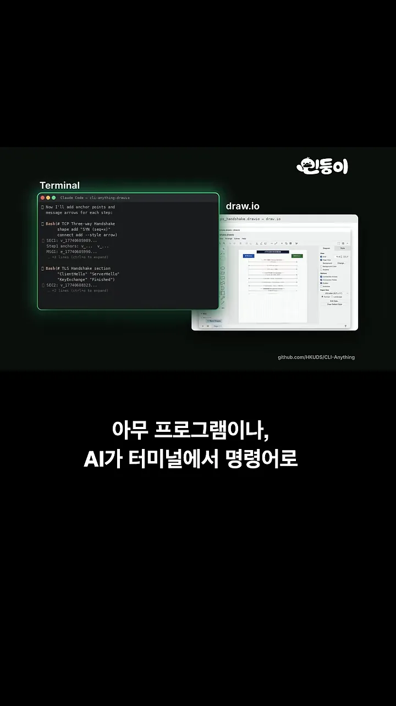
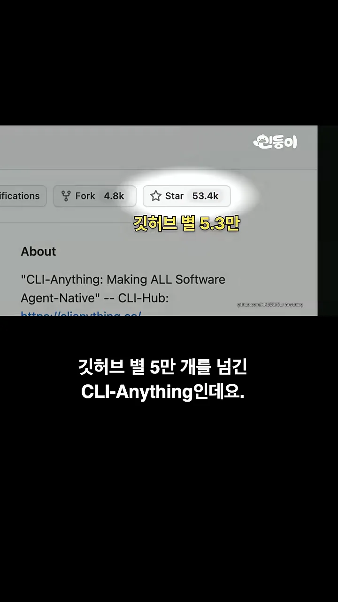
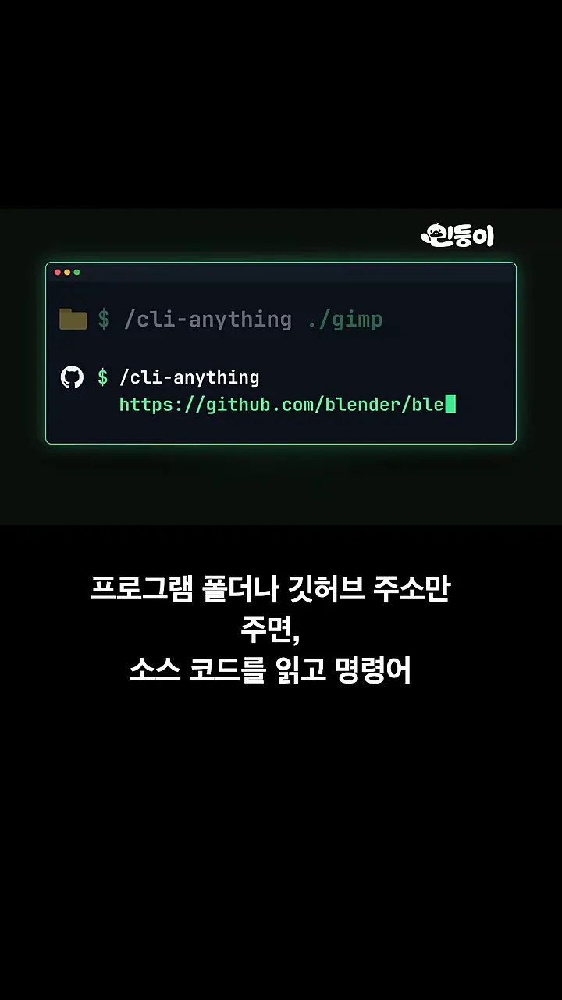
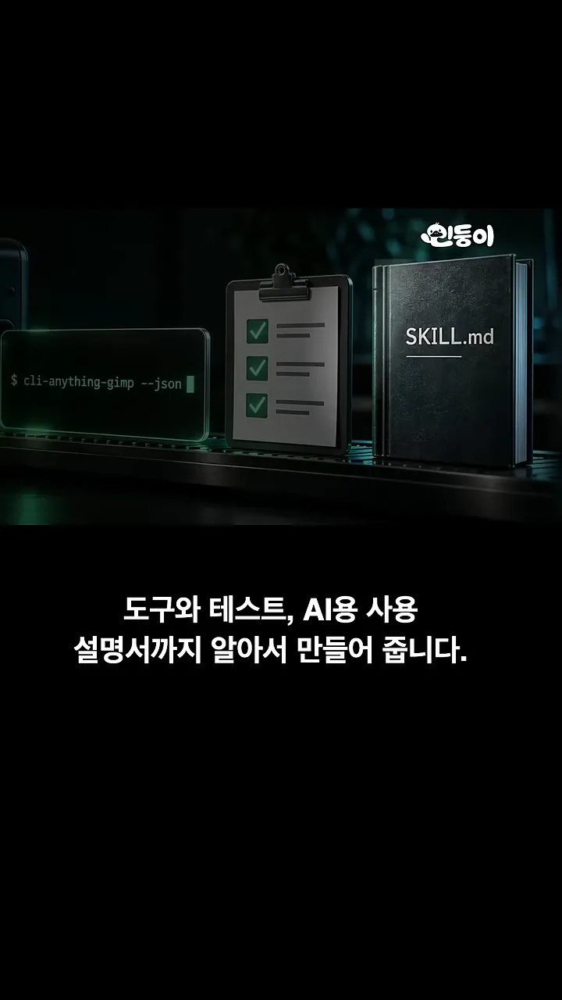
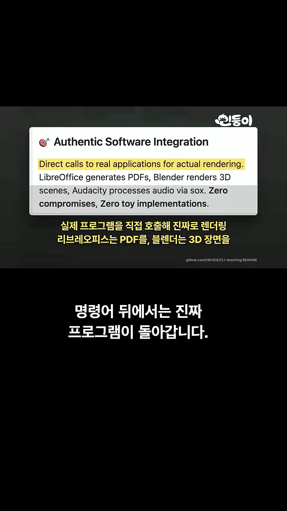
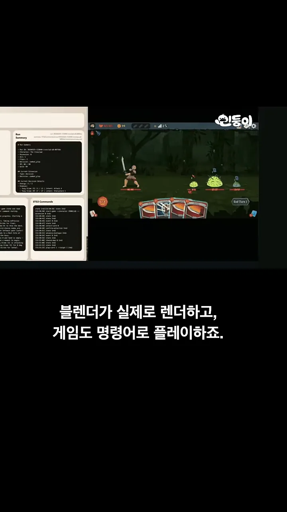
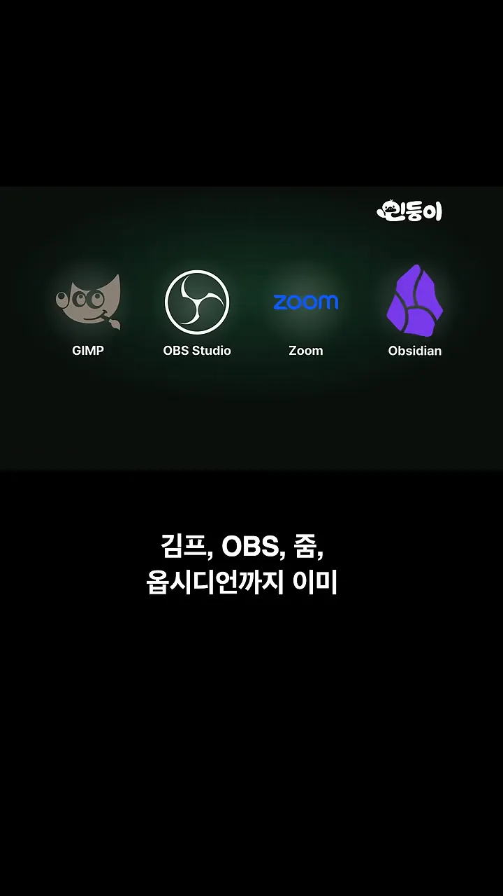
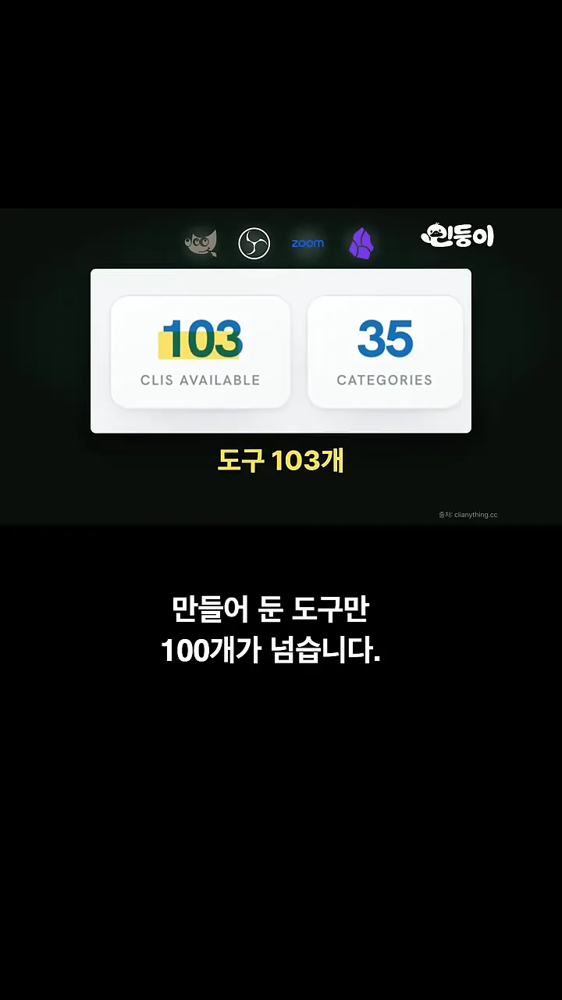
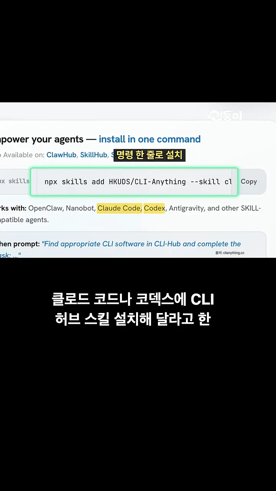
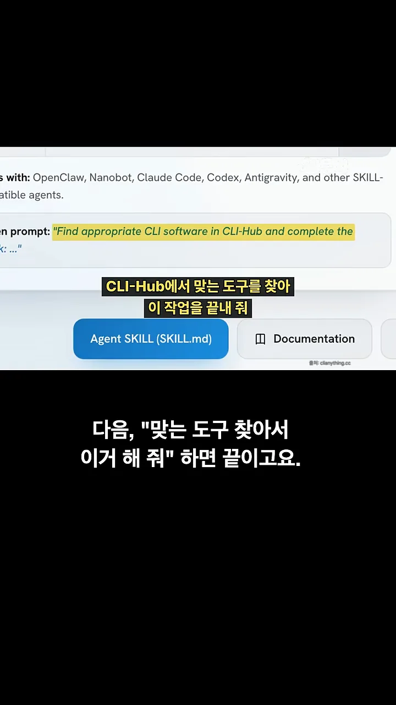

CLI-Anything이 하는 일
첫 장면부터 이 도구가 뭘 하는지 보여 줘요. 왼쪽 터미널 창 제목이 'Claude Code — cli-anything-drawio'예요. 클로드 코드가 shape add, connect add 같은 명령을 차례로 보내고, 오른쪽 draw.io 창에 TCP(Transmission Control Protocol) 핸드셰이크와 TLS(Transport Layer Security) 핸드셰이크 다이어그램이 그려지고 있어요.

이 생성기의 이름은 CLI-Anything이에요. 영상은 깃허브 별이 5만 개를 넘겼다고 소개해요. 화면 속 저장소 페이지에는 Star 53.4k, Fork 4.8k가 보이고, 소개 문구는 'Making ALL Software Agent-Native'예요.

폴더나 주소만 주면 세 가지를 만들어요
쓰는 법은 명령 한 줄이에요. 화면에는 두 가지 예가 나와요. 위쪽은 로컬 폴더를 주는 /cli-anything ./gimp, 아래쪽은 블렌더의 깃허브 주소를 주는 경우예요.

그러면 소스 코드를 읽고 명령어 도구, 테스트, AI용 사용 설명서까지 알아서 만들어 줘요. 아래 화면의 왼쪽 패널이 만들어진 명령어 cli-anything-gimp --json, 가운데 체크 표시 클립보드가 테스트, 오른쪽 책이 사용 설명서 SKILL.md예요.

영상이 말로 설명한 흐름을 한 장에 모으면 이래요. 그다음부터 AI는 마우스로 화면을 누르는 대신 명령어 한 줄로 그 프로그램을 부려요.
flowchart TB A["프로그램 폴더나 깃허브 주소"] --> B["/cli-anything 생성기가 소스 코드를 읽어요"] B --> C["명령어 도구"] B --> D["테스트"] B --> E["AI용 설명서 SKILL.md"] C --> F["AI가 명령어 한 줄로 프로그램을 부려요"] E --> F
명령어 뒤에는 진짜 프로그램이 있어요
흉내만 내는 가짜 구현이 아니라는 점을 영상은 따로 짚어요. 아래 화면은 프로젝트 README의 'Authentic Software Integration' 항목이에요. 노란 줄이 '실제 렌더링을 위해 진짜 프로그램을 직접 부른다'는 문장이고, 리브레오피스는 PDF를, 블렌더는 3D 장면을, Audacity는 sox로 오디오를 처리한다고 적혀 있어요.

게임도 명령어로 플레이해요. 왼쪽 터미널 창들에 명령과 결과가 쌓이고, 오른쪽에서는 카드 게임 전투가 진행되고 있어요.

이미 만들어 둔 도구만 100개가 넘어요
김프, OBS, 줌, 옵시디언 같은 프로그램은 도구가 이미 만들어져 있어요. 화면에는 GIMP(GNU Image Manipulation Program), OBS Studio, Zoom, Obsidian 네 로고가 나란히 나오고, 이어서 '103 CLIs available', '35 categories' 카드가 나와요.

로고 다음 장면은 숫자 카드예요. 왼쪽 카드가 지금 쓸 수 있는 도구 수, 오른쪽 카드가 분류 수예요.

클로드 코드·코덱스에서 쓰는 법
클로드 코드나 코덱스에서 쓰는 법은 두 단계예요. 먼저 CLI-Hub 스킬을 설치해 달라고 해요. 화면의 초록 상자가 '명령 한 줄로 설치' 부분이고, 아래 'Works with' 줄에서 Claude Code와 Codex가 노랗게 강조돼 있어요.

그다음 'CLI-Hub에서 맞는 도구를 찾아 이 작업을 끝내 줘'라고 시키면 끝이에요. 화면의 노란 줄이 그 프롬프트 원문 'Find appropriate CLI software in CLI-Hub and complete the task'예요.

- CLI-Hub 스킬을 설치해요 — 에이전트에게 설치해 달라고 하거나 직접 실행해요.
npx skills add HKUDS/CLI-Anything --skill cli-hub-meta-skill -g -y - 할 일을 맡겨요 —
Find appropriate CLI software in CLI-Hub and complete the task: …에이전트가 CLI-Hub에서 맞는 도구를 찾아 설치하고 작업을 진행해요